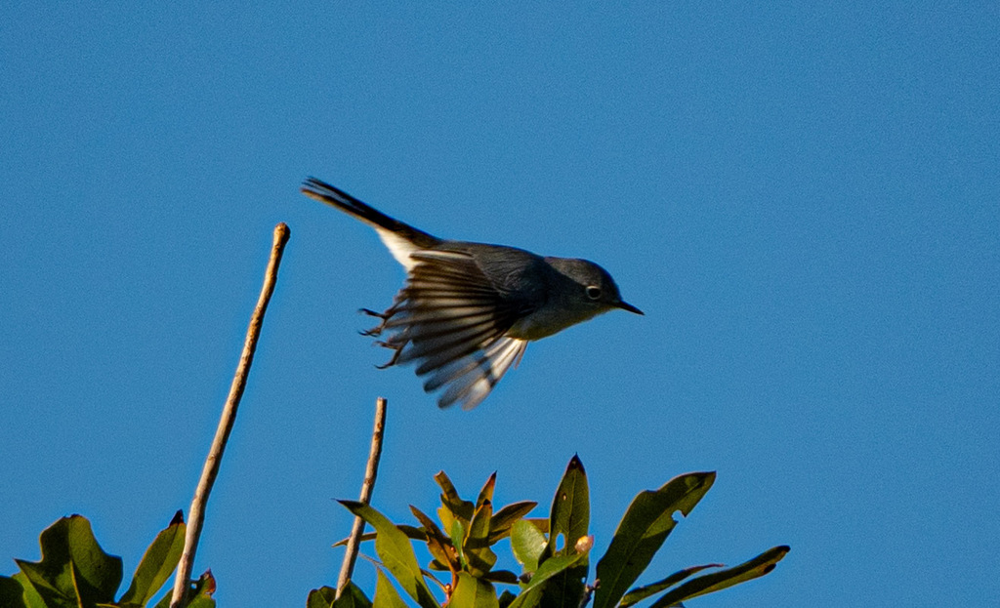

- A tiny, hyperactive, blue-gray bird with a long black-and-white tail it constantly flicks — like a miniature mockingbird on caffeine.
- Despite the name, gnats are not a significant part of its diet. It hunts leafhoppers, beetles, caterpillars, flies, small wasps, and spiders — sometimes shaking a leaf-covered twig to flush prey into the open.
- Its nest is a masterwork: a compact cup of bark strips and grasses, bound together with spider silk and camouflaged on the outside with pieces of lichen — so convincing it looks like a natural tree knot.
- A pair can build up to seven nests in a single breeding season, often dismantling earlier attempts and reusing the materials when predation or mite infestations cause failures.
Tiny and slender — about 4 to 4.5 inches long, slightly larger than a Ruby-throated Hummingbird and smaller than a House Wren.
Blue-gray above, whitish below, with a bold white eye ring. The long tail is black with white outer feathers that make it appear mostly white from below. Breeding males add a narrow black V-shaped line across the forehead extending above the eyes; females and non-breeding birds lack this marking and appear slightly grayer.
Constantly in motion — flitting through outer foliage, cocking and flicking its tail from side to side. The tail action is one of the best field marks: no other small Florida songbird fidgets quite this persistently.
Most commonly heard as a thin, nasal, whining call — often written as pzzzz or zeee — delivered in short bursts. The song is a soft, rambling series of wheezy warbles and slurs, sometimes incorporating mimicked fragments of other species' songs, earning this bird its 'Little Mockingbird' nickname. Songs are heard mainly during the breeding season; the insistent call notes are given year-round and are typically the first sign of the bird's presence.
Look for a tiny, restless bird high in the mid-story or canopy, its long tail pumping side to side almost non-stop. The white eye ring, white tail edges, and blue-gray upperparts are diagnostic. Listen for the thin, whiny pzzzz call — it usually announces the bird before you see it.
Primarily small insects and spiders: leafhoppers, treehoppers, plant bugs, leaf beetles, caterpillars, flies, small wasps, and spider egg cases. Ironically, gnats form no significant part of the diet. Prey is gleaned from outer foliage, snatched in mid-air, or flushed by shaking leaf-covered twigs.
Scan the mid-story and canopy of wooded areas, especially along edges and near water. Listen first — the thin, nasal call note cuts through background noise and reliably betrays the bird's location before it comes into view. Binoculars are essential; the bird moves fast and stays high. Early morning is the most productive time, when feeding activity peaks.
Present year-round at Palma Sola Botanical Park, though the individuals here in summer (breeders) differ from those present in winter (migrants from further north). Numbers swell during spring migration (April) and again in fall (September–October). Most active and vocal from shortly after sunrise through mid-morning. Song is heard primarily in the breeding season (spring–early summer); call notes give it away throughout the year.
Observe and enjoy.

- © Rob Carr (CC-BY-NC), via iNaturalist